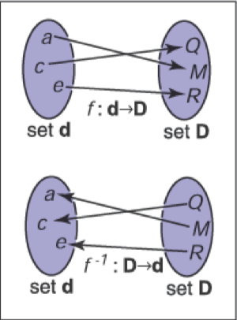
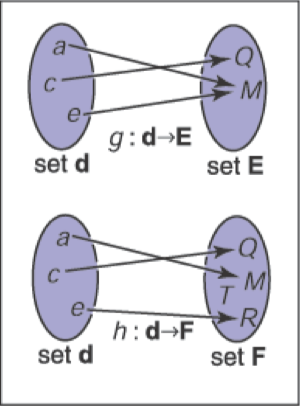
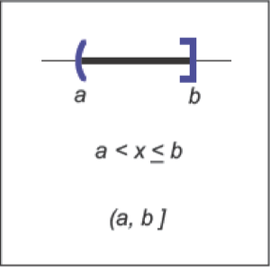

集合和映射
映射，也叫函数，是数学和编程的基础。像程序中的函数一样，数学中的映射需要同一个类型的参数，并将其映射到（返回）一个特定类型的对象。在程序中，我们说的是 "类型"；在数学中，我们要确定集合。当我们有一个对象是一个集合的成员时，我们使用∈符号。比如说，
a ∈ S，
可以理解为 "a是集合S的成员"。给定任何两个集合A和B，我们可以通过两个集合的笛卡尔积来创建第三个集合，表示为A×B。这个集合A×B由所有可能的有序对（a，b）组成，其中a∈A和b∈B。作为缩写，我们用符号A^2表示A×A。我们可以扩展笛卡尔积，从三个集合中创建一个所有可能的有序三元组集合，以此类推，从任意多的集合中创建任意长的有序元组。
常见的关注点包括：
- \(\mathbb{R}\)——实数；
- \(\mathbb{R^+}\)——非负实数（包括0）；
- \(\mathbb{R}^2\)——真实二维平面中的有序对；
- \(\mathbb{R}^n\)——n维迪卡尔空间中的点；
- \(\mathbb{Z}\)——整数；
- \(S^2\)——单位球面上的三维点（R^3中的点）的集合。
请注意，虽然S^2是由嵌入三维空间的点组成的，但它是在一个可以用两个变量进行参数化的表面上，所以它可以被认为是一个二维集合。对映射的记号使用箭头和冒号，例如，
\[ f : \mathbb{R} \mapsto \mathbb{Z}, \]
你可以把它理解为 "有一个叫做f的函数，它把一个实数作为输入，并把它映射成一个整数。" 这里，箭头前面的集合被称为函数的域，右边的集合被称为目标。计算机程序员可能更愿意使用下面等价的语句。"有一个叫f的函数，它有一个实数参数，返回一个整数"。换句话说，上面的集合符号等同于常见的编程符号： \[ \text{integer} \ f(\text{real}) \leftarrow \text{equivalent} \rightarrow f : \mathbb{R} \mapsto \mathbb{Z}。 \] 因此，冒号符号可以被认为是一种编程语法。就是这么简单。
点f(a)被称为a的映像，一个集合A（定义域的子集）的映像是目标映像的子集，包含A中所有点的映像。整个定义域的映像被称为函数的值域。
逆向映射
如果我们有一个函数f : A->B，可能存在一个反函数f^-1 : B->A，它的定义是当b = f ( a )时，f^-1 ( b ) = a 。这个定义只有在每个b \in B都是f下某个点的图像（即范围等于目标），并且只有一个这样的点（即只有一个a，f(a)=b）时才有效。这样的映射或函数被称为双投。双投将每一个a E A映射到一个唯一的b E B，对于每一个b E B，正好有一个a E A，使f(a)=b（图2.1）。一组骑手和马匹之间的双射关系表明，每个人都骑着一匹马，每匹马都被骑着。这两个函数是骑手（马）和马（骑手），它们是彼此的反函数。不是双射的函数没有反函数（图2.2）。

图2.1：一个双射 \(f\) 和反函数 \(f^{-1}\)。注意，\(f^{-1}\)也是一个双射。

图2.2：函数 \(g\) 不具有反函数，因为\(\textbf{d}\)中的两个元素匹配到\(\textbf{E}\)中相同的元素。函数 \(h\) 没有反函数因为\(\textbf{F}\)中的元素 \(T\) 在\(\textbf{d}\) 中没有匹配的元素。
一个双射的例子是 \(f : \mathbb{R} \mapsto \mathbb{R}\)，其中 \(f(x) = x^3\)。它的反函数为 \(f^{-1}(x) = \sqrt[3]{x}\) 。这个例子表明，标准的符号可能有些笨拙，因为 \(x\) 在 \(f\) 和 \(f^{-1}\) 中都被用作虚拟变量。有时使用不同的虚拟变量会更直观，\(y = f(x)\)，\(x=f^{-1}(y)\)。这就产生了更直观的 \(y = x^3\) 和 \(x = \sqrt[3]{y}\)。一个没有反函数的例子是 \(sqr : \mathbb{R} \mapsto \mathbb{R}\)，其中 \(sqr(x) = x^2\)。它不具有反函数的原因包括两个：首先 \(x^2 = (-x)^2\)，其次域中没有成员映射到目标的负数部分。请注意，如果我们把域和范围限制在 \(\mathbb{R^+}\)，可以定义一个反函数。那么 \(\sqrt{x}\) 是一个有效的反函数。
区间
通常情况下，我们希望指定一个函数处理的是数值受限的实数。这样的一个约束就是指定一个区间。区间的一个例子是零和一之间的实数，不包括零或一。我们把它表示为 \((0,1)\)。因为它不包括其端点，所以被称为开区间。相应的闭区间，包含其端点，用方括号表示： \([ 0 , 1 ]\) 。这种符号可以混合使用；即 \([0,1)\) 包括零，但不包括一。当写一个区间 \([a,b]\) 时，我们假定 \(a \leq b\)。表示一个区间的三种常见方法如图2.3所示。区间的笛卡尔积经常被使用。例如，为了表示点 \(x\) 在三维的单位立方体中，我们说\(x \in [0, 1]^3\)。

图2.3：三个表示等效方式用于表示区间从 \(a\) 到 \(b\)，包含 \(b\) 但不包含 \(a\)
区间在与集合运算的结合中特别有用：交集、并集和差集。例如，两个区间的交集是它们共同点的集合。符号 \(\cap\) 用来表示交集。例如，\([3,5) \cap [4,6] = [4,5)\)。而并集，使用符号 \(\cup\) 用来表示任何一个区间内的点。例如，\([3,5) \cup [4,6] = [3,6]\)。与前两个运算符不同，差集运算符根据参数顺序产生不同结果。减号用于差集运算，它返回左侧区间中不在右侧区间的点。例如，\([3,5) - [4,6] = [3,4]\)，以及 \([4,6] - [3,5] = [5,6]\)。这些操作用区间图特别容易直观地表现出来（图2.4）。

图2.4：在 \([3,5)\) 和 \([4,6]\) 上的区间操作
对数函数
虽然当前不像计算器出现之前那样普遍，但对数通常在具有指数项的方程问题中很有用。根据定义，每个对数都有一个底 \(a\)。以 \(a\) 为底的对数 \(x\) 通常被写作 \(\log_ax\)，并且它被定义为若要得到 \(x\) 需要将 \(a\) 乘幂的指数值。即，
\[y = \log_ax \iff a^y = x. \]
请注意，以 \(a\) 为底数的对数和将 \(a\) 乘幂的函数是互逆的。这个基本定义导致几个后果：
\[ \begin{aligned} a^{\log_a(x)} &= x; \\ \log_a(a^x) &= x; \\ \log_a(xy) &= \log_ax+\log_ay; \\ \log_a(x/y) &= \log_ax-\log_ay; \\ \log_ax &= \log_ab\log_bx. \end{aligned} \]
当我们将微积分应用于对数时，经常会出现特殊数字 \(e=2.718...\)。以 \(e\) 为底的对数被称为自然对数。我们采用常用的简写 \(ln\) 来表示：
\[\ln x \equiv \log_ex.\]
请注意，“ \(\equiv\) ”符号可以被理解为“根据定义恒等”。像 \(\pi\) 一样，特殊数字 \(e\) 出现在很多情况下。除了 \(e\) 以外，在许多领域还使用特定的技术进行操作，并在其符号中省略基数，即 \(\log x\)。例如，天文学家经常使用以十为底，理论计算机科学家经常使用以二为底。由于计算机图形学借鉴了许多领域的技术，我们将避免这种缩写。
对数和指数的导数阐明了为什么自然对数是“自然的”：
\[ \begin{aligned} \frac{d}{d x} \log _{a} x &=\frac{1}{x \ln a} \\ \frac{d}{d x} a^{x} &=a^{x} \ln a \end{aligned} \]
上面的常数乘数只有在 \(a = e\) 时才是是统一的。